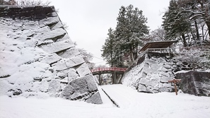

盛岡城は南部信直が1597年に築城を命じ、洪水に見舞われながらも築城開始36年後の1633年に築城しました。
その後、1874年に建物は取り壊され、1906年に近代公園の先駆者「長岡安平」により岩手公園として整備されました。
そして、2006年に開園100周年を記念し、盛岡城跡公園と名前を変え、「日本の名城100選」や「日本の歴史公園100選」にも選ばれました。
住所
盛岡市内丸1番37号
アクセス
JR盛岡駅から徒歩約15分、または盛岡都心循環バス「でんでんむし」利用で「盛岡城跡公園」または「県庁前」バス停下車すぐ